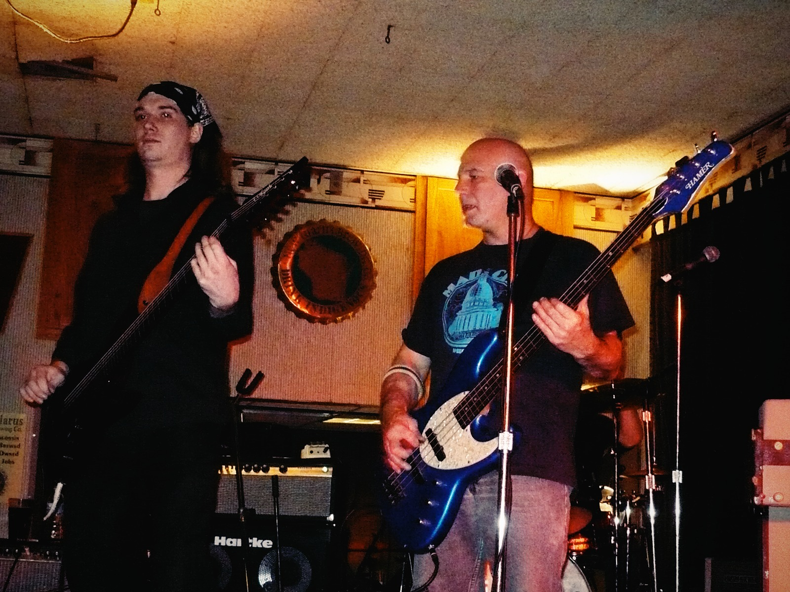
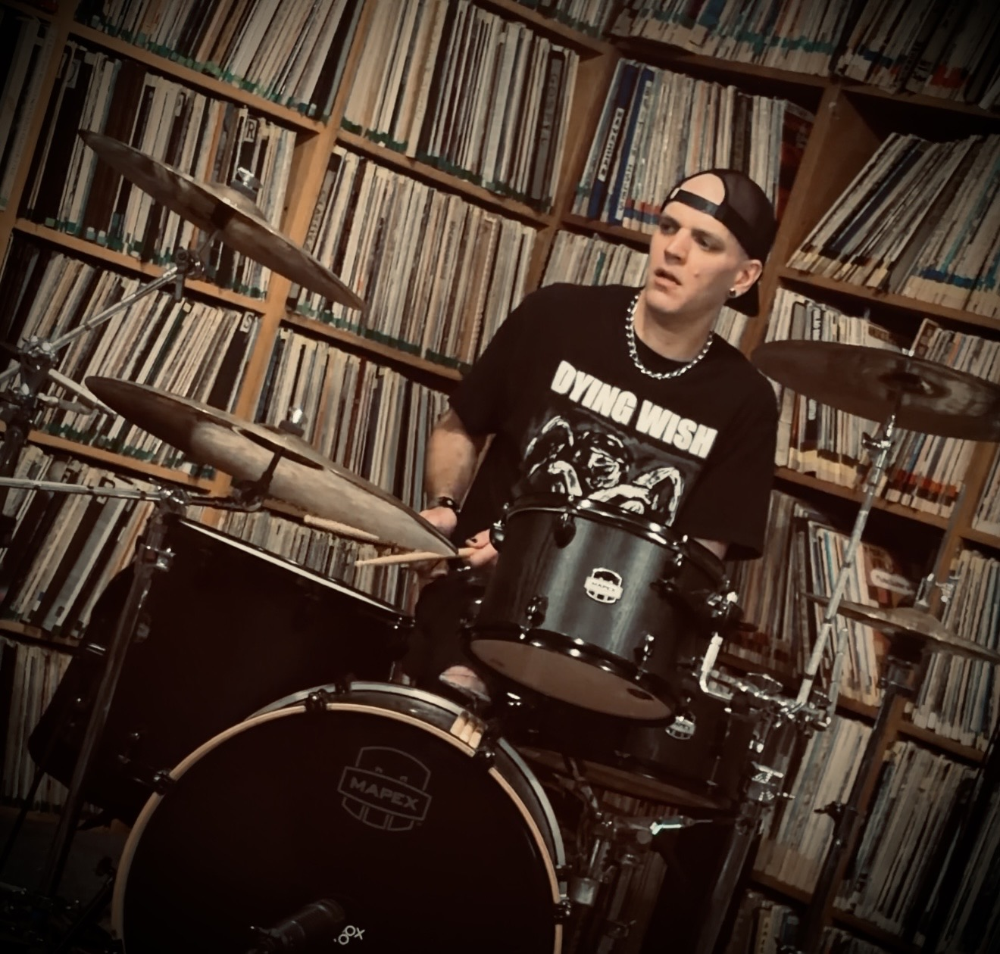
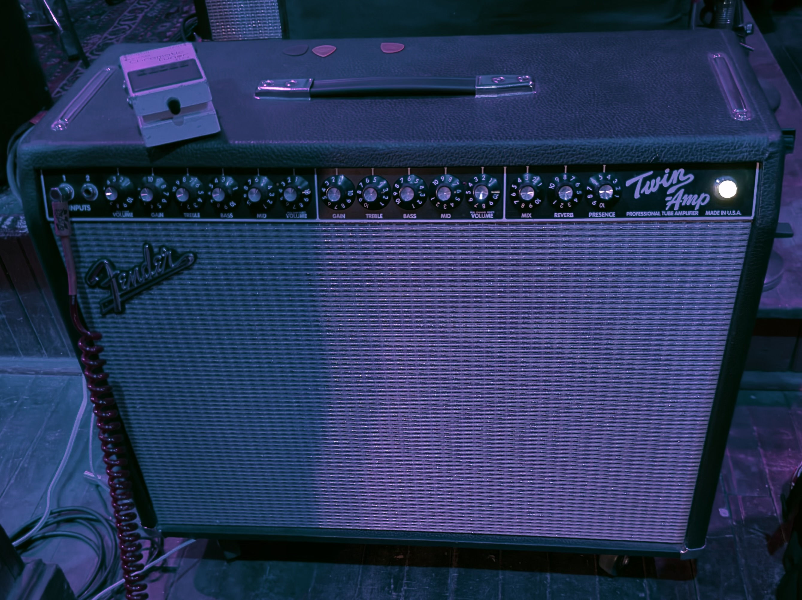
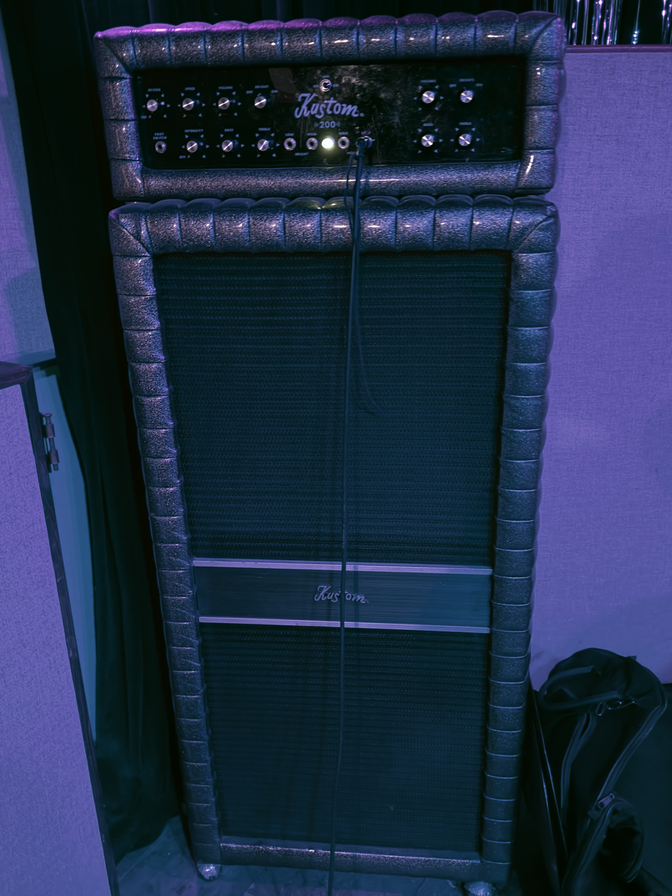

Equipment
The Pistols at Dawn build their sound from surf guitar, vintage-style organ tones, loud bass rigs, and hard-hitting drums. They operate like a DIY punk band, with no backing track, no clicks, just amps, drums and old school rock and roll skills.


Alex — Drums
Alex plays Mapex Mars drum shells with DW hardware and a DW 5000 pedal. His setup is built for fast, driving surf beats with enough punch for the band’s punk and metal edge.
The cymbal setup includes Zildjian A Custom cymbals, including a 22-inch Ping Ride, 18-inch and 16-inch crashes, and A Custom hi-hats. The snare setup includes a die-cast hoop and brass snare wires, with a Pork Pie throne rounding out the kit.

Alexei — Guitar
Alexei plays a custom orange sparkle Strat-style guitar, one of the most recognizable pieces of gear associated with The Pistols at Dawn. His fast tremolo-picked style gives the band its sharp surf attack.
His main amp is a Fender Twin Amp tube combo. The clean headroom, spring reverb, and loud tube response help create the bright, cutting guitar tone at the center of the band’s sound.

Matt — Bass
Matt has used the same blue Hamer bass for most of the band’s run, making it one of the most consistent pieces of gear in The Pistols at Dawn.
His bass rigs have shifted over time. The current setup includes a vintage Kustom bass amp stack with the classic padded tuck-and-roll look, giving the bass side of the band a big, old-school stage presence.

Tim — Organ and Sampler
Tim uses a custom Farfisa-style body with a wood top, housing a Nord Electro configured for organ sounds. He often uses Farfisa-style settings, but the setup allows him to bring in other organ voices when needed.
Tim is also a vintage organ enthusiast and technician. Over the years he has used vintage Hammonds in both live performance and recording, and in the practice studio he is usually seated at a Hammond B3.